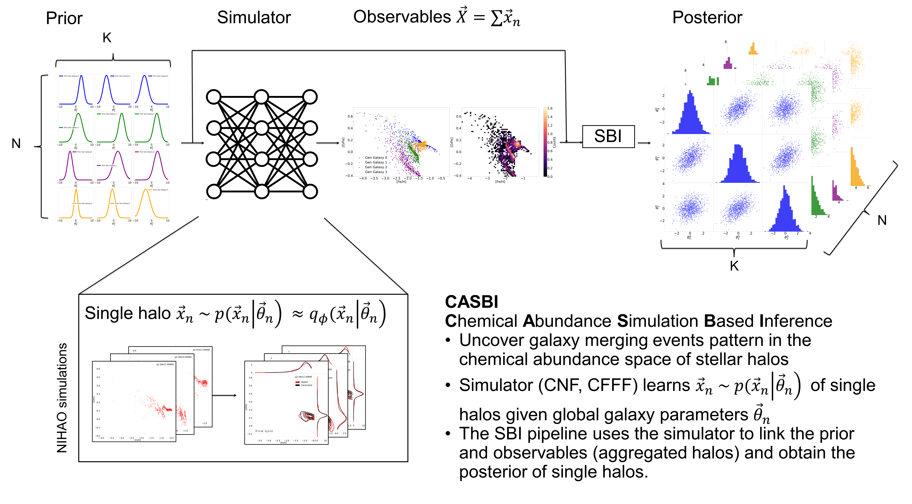
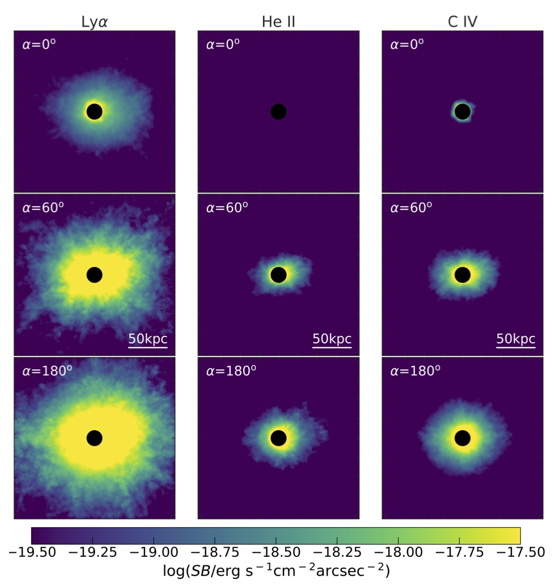
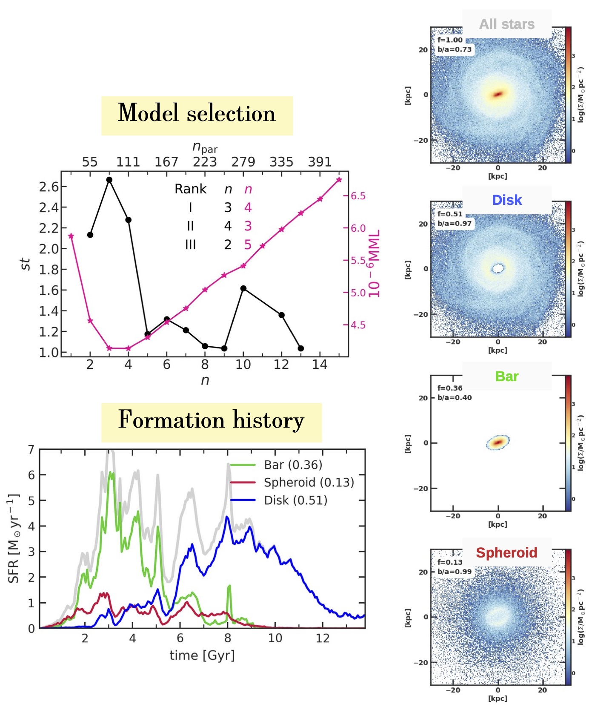

Research projects within the AstroAI-Lab

The AstroAI-Lab is a recently funded interdisciplinary research group and currently consist of three postdocs, two PhD students and several Bachelor and Master students that all work on the intersection of physics, astronomy, data science / informatics and machine learning. Below we list currently ongoign projects.
Bachelor and master student projects
You are a student and looking for some interesting thesis projects in astrophysics and/or machine learning? Our group has plenty open projects in the broad field of galaxy formation, physics-informed ML and simulation-based inference. Do not hesitate to contact us if you like to know more about the projects or the group.
People and their projects
Christian: Deep multi-modal representation learning for stellar spectra
 Given the rising number of surveys that measure spectra of Milky Way stars, the question of how to gain the most knowledge through cross-survey analyses becomes more
important than ever. In this work, state of the art deep multi-modal representation learning algorithms are employed, including contrastive learning and multi-modal
Variational Auto Encoders. Thus, resulting in representations that capture the informative aspects of the data. The representations produced by these algorithms,
are then used as foundation for multi-modal tasks, such as cross-modal generation and fusion.
Given the rising number of surveys that measure spectra of Milky Way stars, the question of how to gain the most knowledge through cross-survey analyses becomes more
important than ever. In this work, state of the art deep multi-modal representation learning algorithms are employed, including contrastive learning and multi-modal
Variational Auto Encoders. Thus, resulting in representations that capture the informative aspects of the data. The representations produced by these algorithms,
are then used as foundation for multi-modal tasks, such as cross-modal generation and fusion.
Anna: Identifying Cluster Types found with AstroLink in MW-like Galaxies
A galaxy's structure holds information on its formation and evolution including past merger events. To find such structures we employ AstroLink,
a hierarchical clustering algorithm designed for astronomical data, that identifies regions of overdensity in the galaxy. For the resulting clusters,
we work on a pipeline to automatically label different types with an emphasis on differentiating between satellite dwarf galaxies and strongly disrupted
satellites resulting in star streams in order to determine AstroLink's ability to find remnants of past mergers and to reconstruct the galaxy's merger history.
Additonally, we investigate the young and compact clusters found in the disk to determine their origin and characteristics.
Lingyi: Model comparison and miss-specification detection for cosmological simulations
Cosmological simulation is a powerful tool in advancing our understanding of galaxy evolution and formation. There are many simulations capable of describing physical
properties such as gas cooling, star formation, scale relationships, chemical bimodality, and more. A question naturally arises with these simulations: How close are
they to the reality? Many previous studies evaluate galaxy simulations using scaling relations which could be biased with only a few physical properties. In this work,
we apply a novel model misspecification detection technique based on Bayesian Inference to compare simulated galaxy images from NIHAO and IllustrisTNG simulations against
SDSS observations. After encoding images to summary space preserving original information as much as possible, a distribution discrepancy between real observed data and
mock data in summary space indicates model misspecification. To this purpose, we perform an outlier detection on latent vectors. We further compare the inliers in summary
space by casting Bayesian model comparison to classification task, to see which model is relatively the best. Additionally, we use explainable AI methods like SHAP values
to partially explain our results.
Justin: Machine learning models for emission line prediction
Line emissivities of active galactic nuclei (AGN) can be accurately computed using photoionization software like CLOUDY,
but the data generation is quite slow. In order to enable the fast generation of large amounts of data for example for further computations inside cosmological simulation codes,
machine learning methods like Deep Fully Connected Neural Networks or Neural Operators can be applied. The data required for training is generated once with cloudy as a 6 dimensional
grid in the dimensions Eddington Luminosity, black hole mass, gas temperature, metallicity, hydrogen density and distance. The goal is to interpolate this data as fast and accurately
as possible.
Robin: Neural Operator learning for astrophysical problems
Robin is generally interested in efficient and scalable solutions to computational problems, mainly utilising machine learning. Such solutions can often be found by using model architectures that take the symmetries of the underlying problem or data into account. Currently, his project applies neural operators like DeepONet to predict the time evolution of functions like cosmic ray spectra or chemical abundances. In addition to inference time, accuracy and memory footprint, it is also of interest to quantify the predictive uncertainty in these applications to decide how much to trust the predictions of the surrogate model.
Sarp: Symplectic neural nets and hamiltonian neural nets for galactic dynamics
Leonard: Blown in the Wind: Simulation and Surrogate Modeling of Stellar Wind Feedback
 Momentum, mass and energy injection from stellar winds and supernova explosions of massive stars effect the interstellar medium (ISM).
Such stellar feedback impacts galaxy formation and evolution (via its contribution to galactic winds), is believed to drive turbulence in the ISM
and thought to be a reason for low galactic star formation efficiency. The interplay of cosmic rays with interstellar
bubbles blown by supernovae / stellar winds is also of interest, e.g. in terms of removal of thermal energy from those bubbles
and re-acceleration of galactic cosmic rays. However, it is computationally infeasible to make galaxy simulations fine enough (in terms of the timestep /
spatial resolution) to accurately resolve wind-blown bubbles and their impact, motivating a surrogate model based on machine learning models.
Momentum, mass and energy injection from stellar winds and supernova explosions of massive stars effect the interstellar medium (ISM).
Such stellar feedback impacts galaxy formation and evolution (via its contribution to galactic winds), is believed to drive turbulence in the ISM
and thought to be a reason for low galactic star formation efficiency. The interplay of cosmic rays with interstellar
bubbles blown by supernovae / stellar winds is also of interest, e.g. in terms of removal of thermal energy from those bubbles
and re-acceleration of galactic cosmic rays. However, it is computationally infeasible to make galaxy simulations fine enough (in terms of the timestep /
spatial resolution) to accurately resolve wind-blown bubbles and their impact, motivating a surrogate model based on machine learning models.
Christian: Representation learning and normalizing flows
PhD projects
People and their projects
Anna Lena: A numerical investigation on galactic outflows using NIHAO and GECKOS
The formation and evolution of galaxies is a complex and multiscale problem, where gas flows play an important role. Cosmological simulations have illustrated that feedback mechanism from stellar winds, radiation fields, supernovae and active galactic nuclei (AGNs) can effectively drive galactic winds. However, the details of the driving mechanisms behind gas in- and outflows are still unclear. Also, many cosmological simulations overlook Cosmic Rays (CRs, feedback from relativistic particles), which are another source of non-thermal feedback. We use the state-of-the-art cosmological hydrodynamical simulation of Milky Way like galaxies NIHAO (Numerical investigation of a hundred astrophysical objects) to study the effect of different feedback processes on gas in- and outflows at different gas temperatures to investigate in the underlying mechanisms driving gas flows. To validate and extend our findings, we study the edge-on spiral galaxies from the GECKOS (Generalising Edge-on galaxies and their Chemical bimodalities, Kinematics, and Outflows out to Solar environments) survey, a large MUSE program recently granted. We plan to use simulation-based inference to test the different feedback processes in our simulations on the observational data.
Giuseppe: Simulation-based inference for galactic archeology
 Galaxies evolve through merging and accreting dwarf galaxies therby destroying lower-mass systems over their lifetimes. The contribution that those lower-mass systems bring to the present-day stellar body has been frozen in stellar halos by the long orbital timescales, making the relicts of this object retain part of their initial progenitor orbit. But dynamical information is not enough to disentangle these components, and the complementary chemical information helps to characterize these building blocks. In fact, chemical abundances of stars are conserved quantities, making the chemical abundance plane ([Fe/H] vs [O/Fe]) a distinct imprint that retains information on the conditions of formation of their stars, like the total mass and the age of the system until the merging event. This theoretical background allows us to attempt to decompose the stellar halo into its components, unraveling the merger history of Milky Way-like galaxies. In the modern era of large N-body galaxy simulations, we recast this question into a Simulation-Based Inference problem to recover the properties of this building block, (e.g. total stellar mass, infall time, ...) using the chemical abundance plane as observables. We therefore present CASBI (Chemical Abundance Simulation Based Inference), a python package to recover the posterior probability of properties of building blocks of Milky Way like galaxy halo. Moreover, CASBI incorporates conditional neural network architectures as simulators to obtain observables from parameters, smoothly interpolating on unseen regions of the parameter space.
Postdoc projects
People and their projects
William: Structural decomposition of synthetic and observational data sets with machine learning
 Among various topics, I am mainly interested in understanding structure formation and evolution particularly at the galactic and sub-galactic scales.
As such, my research is currently focused on using novel machine learning techniques to build algorithms that are capable of classifying structure within both
synthetic and observational data sets in a physically meaningful way. Recently I published AstroLink with the paper here; an unsupervised, hierarchical, and density-based clustering
algorithm (fully documented on readthedocs) that extracts arbitrarily-shaped statistically-robust overdensities from n-dimensional point-based data sets. Now I am developing FuzzyCat; a brute-force,
model-agnostic, and empirical method of propagating the uncertainties of observational data sets into soft-labels for improved statistical analyses of clusters.
In addition, I plan to create a locally-adaptive-metric scheme that learns a map between the cumulative distribution function of a data set and its image.
With these tools I will reveal extensive structural catalogues of state-of-the-art N-body simulations as well as of our own Milky Way, pathing the way for a more
complete understanding of structure formation and evolution within the context of Lambda-CDM.
Among various topics, I am mainly interested in understanding structure formation and evolution particularly at the galactic and sub-galactic scales.
As such, my research is currently focused on using novel machine learning techniques to build algorithms that are capable of classifying structure within both
synthetic and observational data sets in a physically meaningful way. Recently I published AstroLink with the paper here; an unsupervised, hierarchical, and density-based clustering
algorithm (fully documented on readthedocs) that extracts arbitrarily-shaped statistically-robust overdensities from n-dimensional point-based data sets. Now I am developing FuzzyCat; a brute-force,
model-agnostic, and empirical method of propagating the uncertainties of observational data sets into soft-labels for improved statistical analyses of clusters.
In addition, I plan to create a locally-adaptive-metric scheme that learns a map between the cumulative distribution function of a data set and its image.
With these tools I will reveal extensive structural catalogues of state-of-the-art N-body simulations as well as of our own Milky Way, pathing the way for a more
complete understanding of structure formation and evolution within the context of Lambda-CDM.
Aura: Quasar properties from large scale CGM emission
 When quasars (supermassive black holes accreting at rates comparable to their Eddington limit) have large amounts of cool (T~10^4K) gas in their environment (the circumgalactic medium - CGM - of their host galaxies), we can sometimes observe large scale (up to hundreds of kpc) glows or nebulae in the UV emission lines surrounding the host galaxies (e.g. Cantalupo et al. 2014, Hennawi et al. 2015, Arrigoni Battaia et al. 2019). These nebulae encode information about both the amount and state of the cool CGM gas in massive dark matter halos at high redshifts, as well as the central engine driving the emission. Thus, emission glows can be used to understand the baryon cycle around massive galaxies and the impact of high-energy phenomena such as black hole feedback on the large-scale gas fuel for star formation - the galaxies' CGM. We are building a large database of photoionization models, covering the full property space of quasars (e.g. black hole mass, accretion rate) and the full property space of the CGM gas (density, temperature, composition), which will be used to generate synthetic observations for CGM (see also our recent paper), as shown in the figure on the left. To efficiently generate such observations, we are training neural networks/operators on the CGM properties of interest (e.g. line emissivities, ionization fraction of different atomic species, heating and cooling rates), with the goal of developing a simulation-based inference pipeline that can be applied to real observations.
Aura: Galactic Structure Finder (GSF): a tool to reveal the building blocks of galaxies
 GSF is a Python analysis code that searches for galaxy substructure in n- dimensional (nD) stellar feature spaces using Gaussian Mixture Models (GMMs), and constructs summary statistics of these components. We are developing it with the goal of understanding how the building blocks of galaxies form and evolve, and how they relate to the dark universe. The code is equipped with two model selection criteria that can rank the models (described by the number of multivariate Gaussians n) from best to worst. In contrast to the common practice in astrophysics of using poorly physically motivated functions to model partially overlapping galaxy substructures, such as disks, bulges, bars, and stellar halos, GSF performs a purely data-driven unsupervised partitioning of galaxies, for any user-defined input feature space (spatial, dynamical, and population properties can be mixed in any way the user imagines). The figures on the left refer to a simulated TNG50 galaxy that was analyzed with GSF in an input 6D feature space to reveal a disk, bar, and spheroid (Obreja et al. in prep). This type of partitioning allows the detailed study of the formation history of individual galaxy components. As an interesting application, galaxy components separated by GSF on the basis of their dynamics have also been shown to be good proxies for properties of dark matter halos that are beyond the reach of observations, such as halo spins as shown in our 2022 paper.
Lorenzo:
 to be filled
to be filled
Past projects
Ufuk: Galaxy morphology models with AI
We investigate the use of machine learning to create galaxy morphology models and encode the information
contained in modern state-of-the-art galaxy simulations. Simulation data from the IllustrisTNG project is
used to calculate the Eigengalaxies as the basis vectors of the transformed image space using Principal
Component Analysis in two and three dimensions and it is demonstrated, how eigengalaxies encode specific
morphological information. In the final step the NVIDA StyleGAN2-ada is trained on the 2D galaxy images.
We find that a simple PCA model with 49 eigengalaxies can recover the general shape of 9763 two dimensional
galaxy images and even if 99% of all images have a reconstruction error less than 9%, a more advanced model
like a GAN is needed to describe highly nonlinear structures (e.g spiral arms) and small scale structures.
All results are published here with all source code of the GAMMA project to be found
here. Additional animations
and interactive dashboards can be accessed through the GitHub-Repository of Ufuk's thesis.
Luca: GalacticFlow: Learning a Generalized Representation of Galaxies with Normalizing Flows
State-of-the-art galaxy formation simulations generate data within weeks or months. Their results consist of a random sub-sample of possible galaxies with a fixed number of stars. We propose a ML based method, GalacticFlow, that generalizes such results. We use normalizing flows to learn the extended distribution function of galaxies conditioned on global galactic parameters. GalacticFlow then provides a continuized and condensed representation of the ensemble of galaxies in the data. Thus, essentially compressing large amounts of explicit simulation data into a small implicit generative model. Our model is able to evaluate any galaxy eDF given by a set of global parameters and allows generating arbitrarily many stars from it. We show that we can learn such a representation, embodying the entire mass range from dwarf to Milky Way mass, from only 90 galaxies in ∼18 hours on a single RTX2080Ti and generate a new galaxy of one million stars within a few seconds. All code to reproduce our results can be found here.
Immanuel: Speeding up astrochemical reaction networks with autoencoders and neural ODEs
In astrophysics, solving complex chemical reaction networks is essential but computationally demanding due to the high dimensionality and stiffness of the ODE systems.
Traditional approaches for reducing computational load are often specialized to specific chemical networks and require expert knowledge. Immanuel's project introduces a machine
learning-based solution employing autoencoders for dimensionality reduction and a latent space neural ODE solver to accelerate astrochemical reaction network computations.
Additionally, we propose a cost-effective latent space linear function solver as an alternative to neural ODEs. These methods are assessed on a dataset comprising 29 chemical
species and 224 reactions. Our findings, also published here demonstrate that the neural ODE achieves a 55x speedup over the baseline model while maintaining significantly higher accuracy by up
to two orders of magnitude reduction in relative error. Furthermore, the linear latent model enhances accuracy and achieves a speedup of up to 4000x compared to standard
methods. All code to reproduce our results can be found here.
Eva: Star formation models in cosmological simulations
State-of-the-art cosmological hydrodynamical simulations of galaxy formation have reached the point at
which their outcomes result in galaxies with ever more realism. Still, the employed sub-grid models
are relatively simple empirical models that include several free parameters. One of the challenges is
the robust identification and characterization of star forming regions and various methods have been proposed.
However, the results of these methods are often inconsistent and the underlying assumptions are not always
physically well motivated. In this project, we investigate how we can robustly identify star forming regions
in cosmological simulations and explore novel prescriptions of calculating the star formation efficiency of these regions.
Kalina: Recreating the Hubble Tuning-Fork with generated galaxies using Normalising Flows
Through a detailed study of 95 galaxies from the NIHAO simulations, we estimate critical parameters like the bulge-to-total (B/T) ratio and bar strength, employing methodologies
such as kinematic decomposition and Fourier analysis. This analysis allows us to explore the intricate diversity of galaxy morphologies and their physical properties.
Leveraging the power of normalizing flows, specifically the GalacticFlow model, we model the multidimensional parameter space derived from the new found galactic properties.
This approach enables us to generate realistic galaxy simulations efficiently, capturing the vast variability in galactic structures. The thesis highlights the model's
capability to replicate the classical Hubble tuning-fork diagram computationally, emphasizing the impact of parameters like the B/T ratio on galactic morphology.
Rebekka: Galactic chemical enrichment in MW dwarf galaxies
With the advent of large spectroscopic surveys the amount of high quality chemodynamical data in the Milky Way and its satellite galaxies increased tremendously.
Accurately and correctly capturing and explaining the detailed features in the high-quality observational data is notoriously difficult for state-of-the-art numerical models.
Here we investigate a set of new cosmological galaxy formation models that include improved prescriptions for chemical enrichment and compare our findings to the
observational data.